Custom Homes
Ground-up residences coordinated from early feasibility and preconstruction through final delivery.
Explore custom homes →
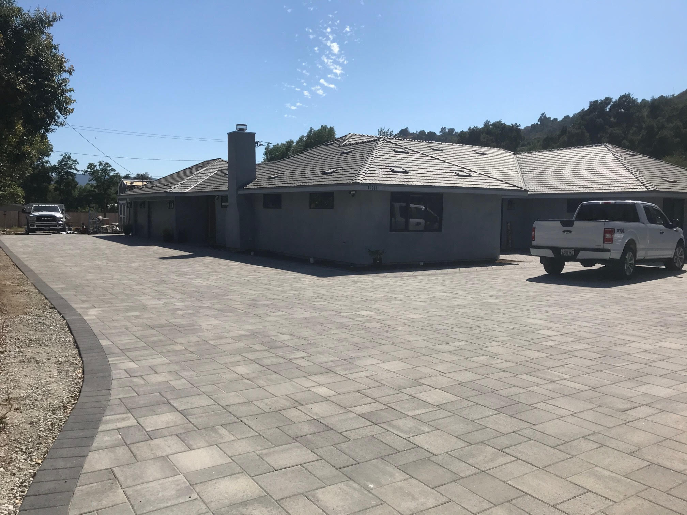
Ventura County & Surrounding Areas
General contracting, preconstruction and design coordination for custom homes, major additions, ADUs, whole-home remodels and commercial construction.
General contracting with a preconstruction mindset
California Custom Builders connects early planning with accountable construction. We coordinate with owners, architects, engineers and specialty trades to evaluate feasibility, develop realistic budgets and organize the work before construction begins. With more than 21 years of experience, we manage substantial residential and commercial projects throughout Ventura County and neighboring communities.
What we build
Ground-up residences coordinated from early feasibility and preconstruction through final delivery.
Explore custom homes →Major additions planned around the existing structure, property constraints and the way you live.
Explore additions →Attached and detached accessory dwelling units organized from feasibility through construction.
Explore ADUs →Comprehensive renovations that bring structure, systems, interiors and finishes together.
Explore remodeling →Commercial renovations, tenant improvements and coordinated multi-trade construction.
Explore commercial work →Drywall patching, door and hardware adjustments, trim and finish carpentry, caulking and weatherproofing, fixture replacement, and other small property repairs. Available in Ventura, Oxnard, Ojai, Camarillo, Santa Paula and Carpinteria.
Preconstruction & estimating
Early contractor involvement helps align the design, scope and budget while changes are still manageable. We work with the owner and design team to identify risks, compare options and create a practical path to construction.
Our general contracting approach →Review the site, intended scope, access, existing conditions and major project constraints.
Develop realistic cost information as the plans and selections take shape.
Coordinate constructability questions with architects, engineers and consultants.
Organize permitting, long-lead selections, trade scopes and the path to mobilization.
Selected work
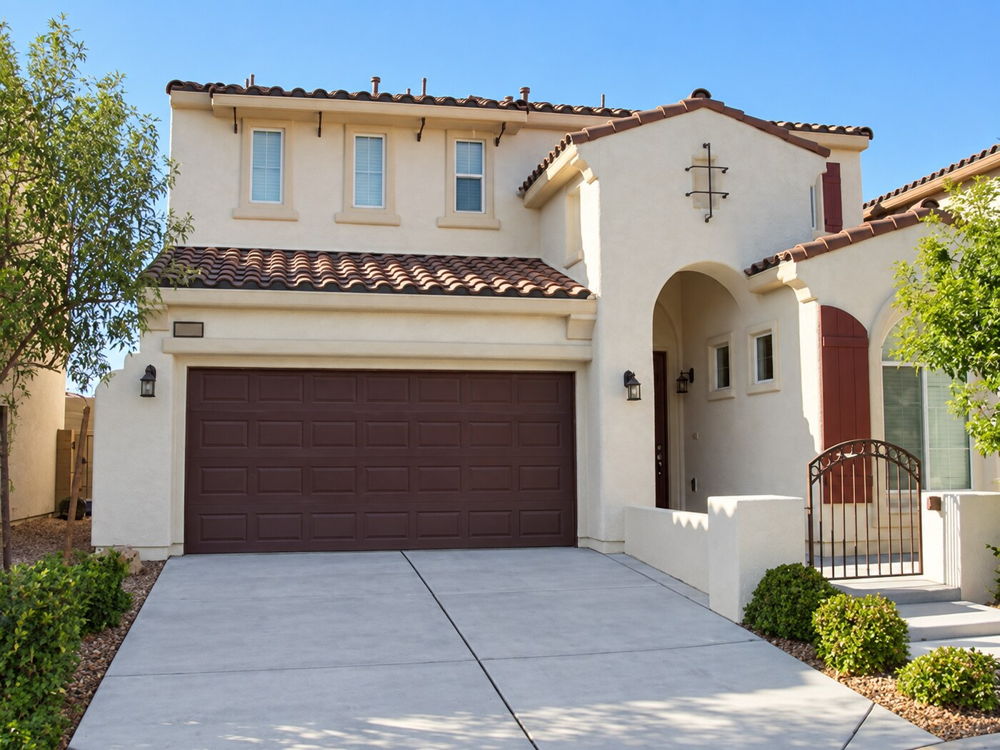
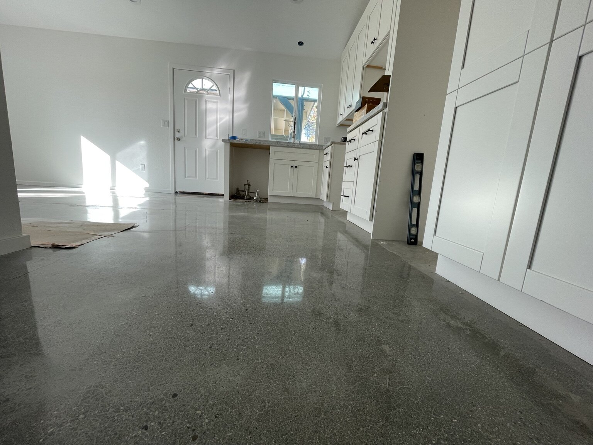
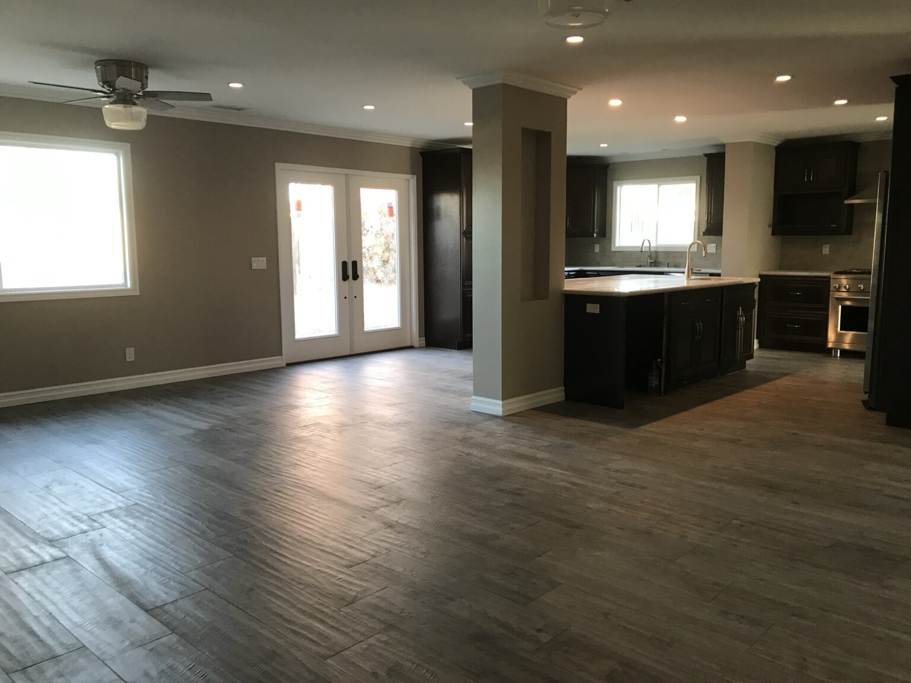
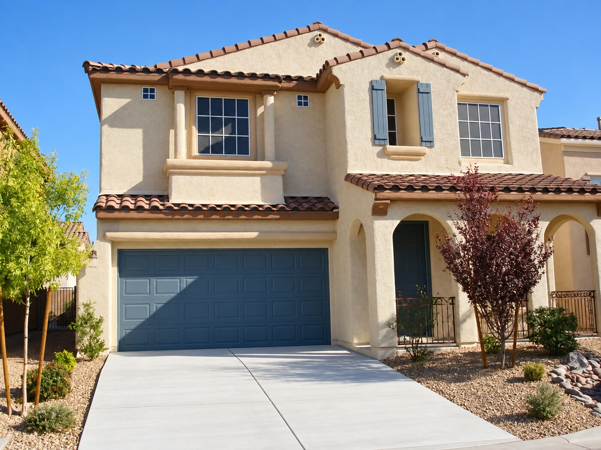
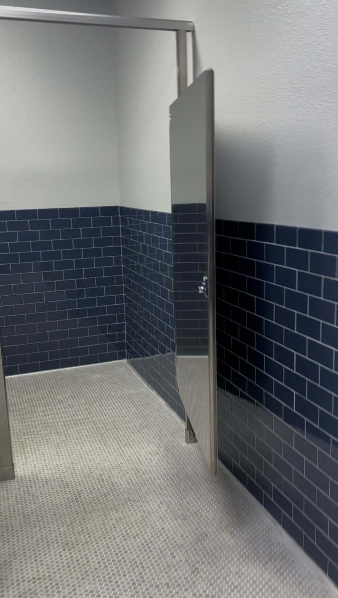
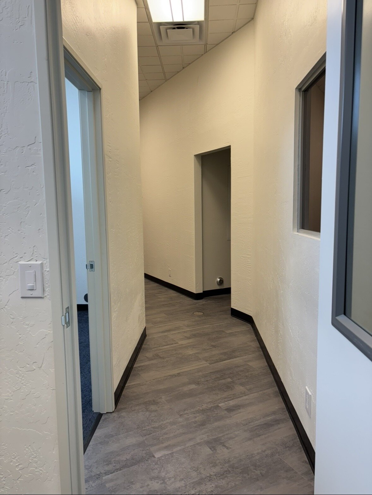
In the field
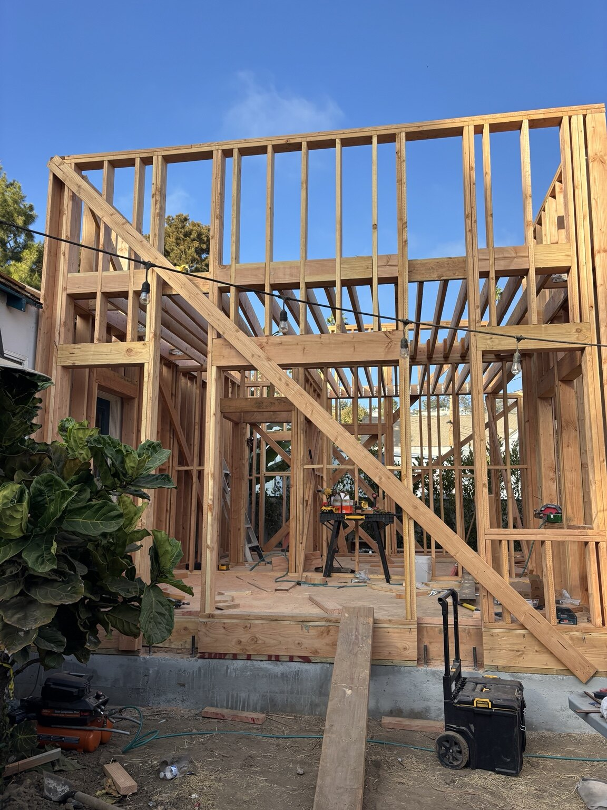
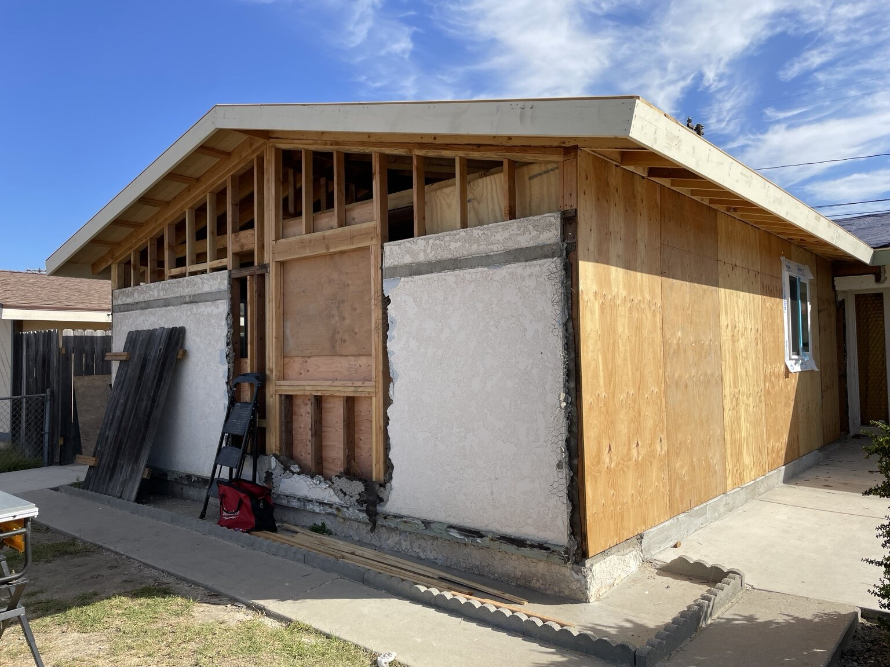
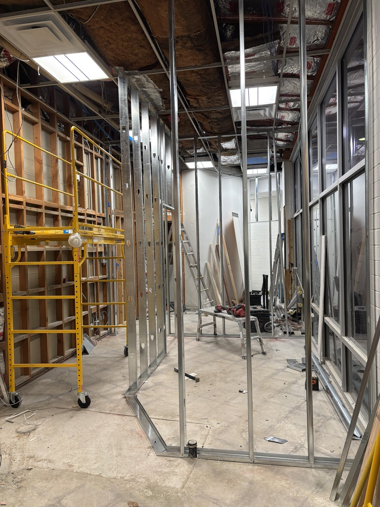
How we work
We discuss goals, site conditions, project constraints, schedule expectations and overall fit.
We define scope, develop pricing, review options and identify decisions that affect cost.
We coordinate with the design team, clarify constructability and organize the path to permits and procurement.
We manage trades, schedule, quality, communication and the final details through completion.
Client reviews
5.0
20 Google reviews
We got several bids for our fire rebuild and California Custom Builders beat their bids easily. After speaking with Juan we knew that his knowledge of the construction process was very thorough. We needed someone who had built new homes before. Juan has literally managed the construction of hundreds of new homes. He made it a stress free process and got it done in 4 months. Very impressive.
Juan was excellent to work with and I especially appreciated his communication and responsiveness, professionalism, integrity, and genuine care. He was always very prompt when we had questions and we could tell that he took pride in his work. He did an approximately 380sf addition for us consisting of three rooms + a roof deck; we are very happy with how the project turned out and how it is integrated with our existing home. He stayed on budget and was true to his word - we greatly appreciated working with Juan and would readily work with him again.
I was very satisfied with the work. The two projects he did for me came in on time and on budget Juan is a solid professional. He understands the ins and outs of the construction business, and he uses his knowledge and experience to help his customers meet their expectations. He listens and is innovative to solve issues, but he is also realistic and doesn't make unrealistic promises just to get hired. Juan's first project was a 900 Sq. foot addition to my daughter's SF dwelling, for a master bedroom & bath, with an enlargement of the kitchen and family room. The kitchen island was a stunning feature. His second project for me was a kitchen remodel and electrical upgrades in my home. I would recommending him whole-heartedly for any project. He is very talented and reliable.
California Custom Builders was excellent. My project went smoothly and came out fantastic! Juan, is extremely protessional, conscientious, and hard working. He is extremely thorough and knowledgeable, and stuck to his timeline as much as he could controlled. Everything was transparent. Pay schedule was detailed and forthcoming, and he worked well with all of his subcontractors. I never had to worry because I knew Juan was meticulously overseeing the project on a daily basis. Juan listened and was responsive to every concern. He found reasonable solutions and the lines of communication were always open. For any home owner looking to complete a project of any size, California Custom Builders is the right choice. Prices are fair and you will be able to sleep easy knowing that everything is taken care of. Would absolutely recommend and will use again!
Start a conversation
If you’re considering a substantial residential or commercial project in our service area, use the form to tell us about it. We’ll review the details and follow up directly.